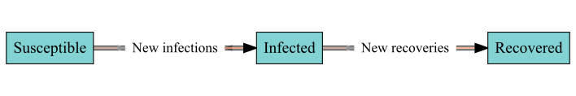
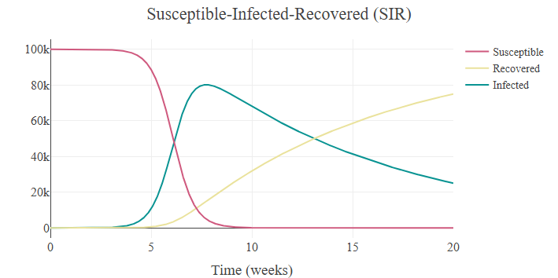

sdbuildR is an R package for building, simulating, and exploring stock-and-flow models. Originating in the field of system dynamics, stock-and-flow models represent processes as quantities (stocks) that accumulate or deplete over time and the processes (inflows and outflows) that change them. sdbuildR is designed to make stock-and-flow modelling accessible to a broad audience, requiring minimal mathematical or system dynamics background knowledge.
Quick start
Load one of the dozens of models from the built-in library, such as the classic SIR (Susceptible-Infected-Recovered) epidemic model:
library(sdbuildR)
# Load stock-and-flow model
sfm <- stockflow("SIR")
# View the stock-and-flow diagram
plot(sfm)

simulate() produces an interactive timeseries plot. See it run — and build the same model from scratch — in the Get started guide.
Installation
The release version can be installed from CRAN:
install.packages("sdbuildR")The development version can be installed from GitHub:
if (!require("remotes")) install.packages("remotes")
remotes::install_github("KCEvers/sdbuildR")Overview of main features
sdbuildR is designed to support the iterative process of building, simulating, and testing stock-and-flow models. Models can flexibly be modified and simulated in either R or Julia (see setup guide) for a major speed-up on large or repeated runs. All package capabilities are described in the vignettes:
- Get started: A guided tour of the main features.
- Build: Build, modify, and simulate stock-and-flow models.
- Ensemble simulations: Explore a model’s behaviour across parameter ranges and initial conditions.
- Unit tests: Verify models behave as intended with unit tests.
- Job Demands-Resources Theory: An example of formalizing psychological theory with sdbuildR.
- Julia setup: Set up Julia for faster simulations.
- Import/Export: Import models from deSolve or Insight Maker, and export to other formats.
Other system dynamics software
sdbuildR is heavily based on common system dynamics software such as Vensim, Powersim, Stella, and Insight Maker. To translate xmile models to R, see the R package readsdr. To build stock-and-flow models with the R package deSolve, the book System Dynamics Modeling with R by Jim Duggan will prove useful. In Python, stock-and-flow models are supported by PySD.
Troubleshooting
sdbuildR is under active development. While thoroughly tested, the package may have bugs, particularly in complex model translations. We encourage users to report issues on GitHub - your input helps the package improve! Use summary() to run model diagnostics, and use the vignettes for guidance.
Citation
To cite sdbuildR, please use:
citation("sdbuildR")
#> To cite package 'sdbuildR' in publications use:
#>
#> Evers K (2025). _sdbuildR: Easily Build, Simulate, and Visualise
#> Stock-and-Flow Models_. doi:10.32614/CRAN.package.sdbuildR
#> <https://doi.org/10.32614/CRAN.package.sdbuildR>, R package version
#> 1.0.8.
#>
#> A BibTeX entry for LaTeX users is
#>
#> @Manual{,
#> title = {sdbuildR: Easily Build, Simulate, and Visualise Stock-and-Flow Models},
#> author = {Kyra Caitlin Evers},
#> year = {2025},
#> note = {R package version 1.0.8},
#> doi = {10.32614/CRAN.package.sdbuildR},
#> }